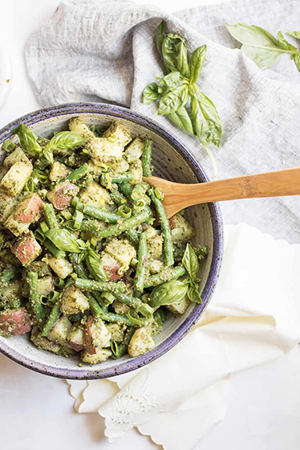

Green Bean Potato Pesto Salad

Description
This recipe is a simple, delicious summer favourite using fresh homemade pesto, local green beans & soft, boiled potatoes.
Ingredients
- Small Potatoes
- Green Beans
- Basil
- Olive Oil
- Pine Nuts
- Parmesan Cheese
- 3 or 4 Garlic cloves
- 1/2 Lemon (optional)
- Salt & Pepper
Steps
- Start by boiling your potatoes & green beans in seperate pots
- Add Pine Nuts & Parmesan Cheese to a food processor. Pulse.
- Add Basil leaves to food processor. Pulse.
- Chop & add garlic cloves to food processor. Pulse.
- Add olive oil to your pesto mix, a little at a time, pulsing in between until you achieve your desired consistency.
- Add salt & pepper to your pesto to taste.
- If desired, add the juice of half a lemon to your pesto.
- Once your green beans & potatoes are done cooking, drain water and add both to serving bowl.
- Add your pesto sauce to potatoes and green beans and mix to cover vegetables.
- You're done! Serve warm, or store in the fridge for up to 3 days and enjoy cold.